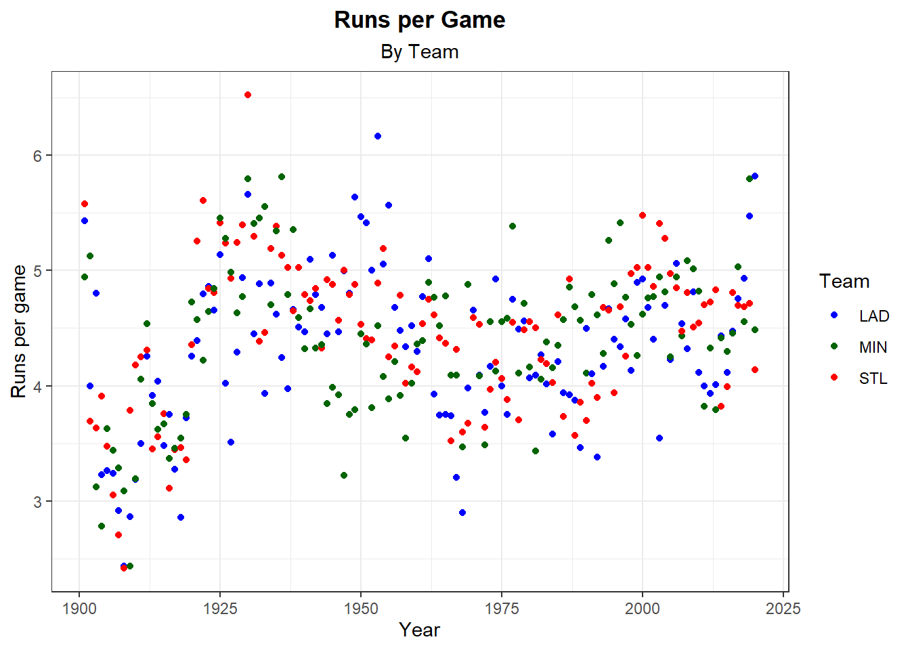
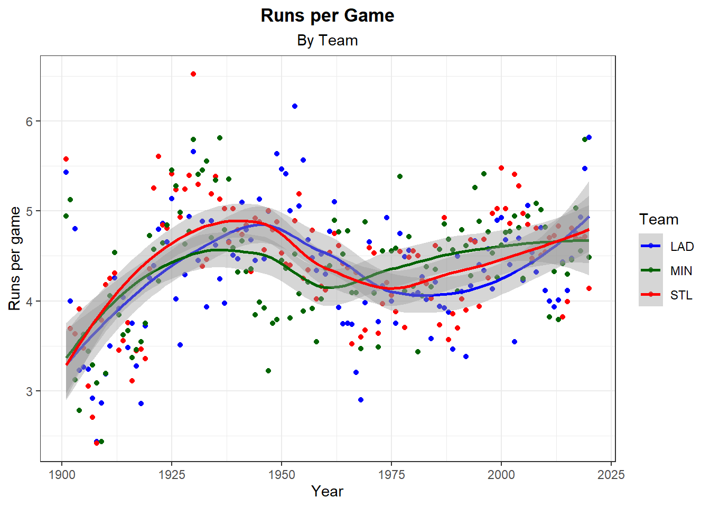

Chapter 6 Challenge Comparison
By now if you have completed all of the challenges you should have something that looks like:
library(dplyr)
library(forcats)
library(magrittr)
## Filter data for the necissary variables.
plot.data <- Teams %>%
filter(franchID %in% c("LAD", "STL", "MIN") & yearID > 1900) %>%
mutate(Team = as.character(franchID)) %>%
mutate(RunsPerGame = R / G) %>%
mutate(HitsPerGame = HA / G)
## Plot
ggplot(data = plot.data, aes(yearID,RunsPerGame)) +
theme_bw()+
geom_point(aes(color =Team)) +
xlab("Year") +
ylab("Runs per game") +
ggtitle("Runs per Game", subtitle = "By Team") +
theme(plot.title = element_text(hjust = 0.5, face = "bold"),
plot.subtitle = element_text(hjust= 0.5)) +
scale_color_manual(values = c("blue","darkgreen","red"))
One issue with this plot is we can’t tell during with years with team scored the most runs per game. We can add geom_smooth to help.
ggplot(data = plot.data, aes(yearID,RunsPerGame)) +
theme_bw()+
geom_point(aes(color =Team)) +
geom_smooth(aes(color=Team)) + # Creates a smooth line to see which team scored the most runs per game from year to year.
xlab("Year") +
ylab("Runs per game") +
ggtitle("Runs per Game", subtitle = "By Team") +
theme(plot.title = element_text(hjust = 0.5, face = "bold"),
plot.subtitle = element_text(hjust= 0.5)) +
scale_color_manual(values = c("blue","darkgreen","red"))## `geom_smooth()` using method = 'loess' and formula 'y ~ x'